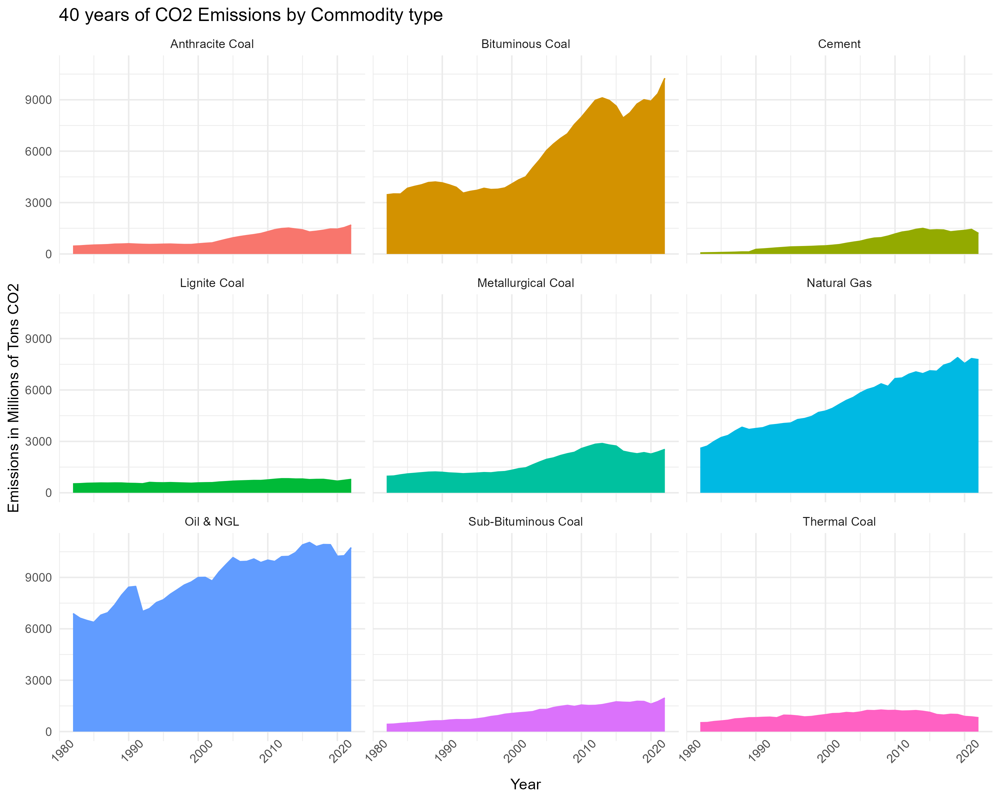
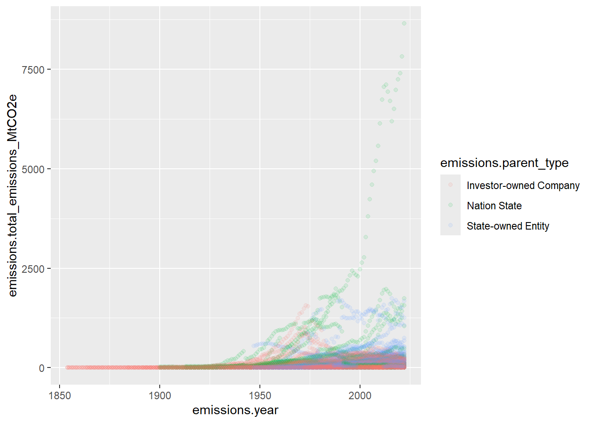

library(tidyverse)
library(tidytuesdayR)
library(gt)
# tuesdata <- tidytuesdayR::tt_load('2024-05-21')
# emissions <- tuesdata[1] |> as.data.frame()
# write_csv(emissions, file = "Data/Emissions/Emissions.csv")
emissions <- read_csv("Data/Emissions/Emissions.csv") |> drop_na()
glimpse(emissions) |> as.data.frame() |> saveRDS("Data/Emissions/emissionglimpse")
head(emissions) |> as.data.frame() |> saveRDS("Data/Emissions/emissionhead")Tidy Tuesday
TidyTuesday
DataAnalysis
Data source:
| emissions.year | emissions.parent_entity | emissions.parent_type | emissions.commodity | emissions.production_value | emissions.production_unit | emissions.total_emissions_MtCO2e |
|---|---|---|---|---|---|---|
| 1962 | Abu Dhabi National Oil Company | State-owned Entity | Oil & NGL | 0.91250 | Million bbl/yr | 0.3638848 |
| 1962 | Abu Dhabi National Oil Company | State-owned Entity | Natural Gas | 1.84325 | Bcf/yr | 0.1343552 |
| 1963 | Abu Dhabi National Oil Company | State-owned Entity | Oil & NGL | 1.82500 | Million bbl/yr | 0.7277697 |
| 1963 | Abu Dhabi National Oil Company | State-owned Entity | Natural Gas | 4.42380 | Bcf/yr | 0.3224525 |
| 1964 | Abu Dhabi National Oil Company | State-owned Entity | Oil & NGL | 7.30000 | Million bbl/yr | 2.9110786 |
| 1964 | Abu Dhabi National Oil Company | State-owned Entity | Natural Gas | 17.32655 | Bcf/yr | 1.2629390 |
plot <- emissions |>
filter(emissions.year >= max(emissions.year)- 40) |>
group_by(emissions.commodity, emissions.year) |>
summarise(emissions = sum(emissions.total_emissions_MtCO2e)) |>
ggplot(aes(x = emissions.year, y = emissions, fill = emissions.commodity, color = emissions.commodity)) +
geom_density(stat = "identity") +
facet_wrap(~emissions.commodity) +
labs(title = "40 years of CO2 Emissions by Commodity type", x = "Year", y = "Emissions in Millions of Tons CO2") +
theme_minimal() +
theme(legend.position = "none", axis.text.x = element_text(angle = 45))
plot ### Split data into test and train ### Create a model with the training data and make predictions using the test data kept in reserve.
library(caret)Loading required package: lattice
Attaching package: 'caret'The following object is masked from 'package:purrr':
liftset.seed(123)
emissions$emissions.parent_type |> unique()[1] "State-owned Entity" "Investor-owned Company" "Nation State" emissions |>
ggplot(aes(x = emissions.year, y = emissions.total_emissions_MtCO2e, color = emissions.parent_type)) +
geom_point(alpha = .1)
train_indices <- createDataPartition(emissions$emissions.total_emissions_MtCO2e, p = 0.7, list = FALSE)
train <- emissions[train_indices, ]
test <- emissions[-train_indices, ]
colnames(train)[1] "emissions.total_emissions_MtCO2e" "emissions.parent_type"
[3] "emissions.commodity" "emissions.year" model <- glm(data = train, formula = "emissions.total_emissions_MtCO2e~.",
na.action = na.omit)
step(model)Start: AIC=126162.8
emissions.total_emissions_MtCO2e ~ emissions.parent_type + emissions.commodity +
emissions.year
Df Deviance AIC
<none> 882338528 126163
- emissions.year 1 897912733 126315
- emissions.commodity 8 920290083 126517
- emissions.parent_type 2 928459160 126607
Call: glm(formula = emissions.total_emissions_MtCO2e ~ emissions.parent_type +
emissions.commodity + emissions.year, data = train, na.action = na.omit)
Coefficients:
(Intercept)
-3068.627
emissions.parent_typeNation State
245.572
emissions.parent_typeState-owned Entity
29.678
emissions.commodityBituminous Coal
250.616
emissions.commodityCement
104.237
emissions.commodityLignite Coal
28.389
emissions.commodityMetallurgical Coal
68.662
emissions.commodityNatural Gas
131.613
emissions.commodityOil & NGL
207.183
emissions.commoditySub-Bituminous Coal
101.665
emissions.commodityThermal Coal
158.356
emissions.year
1.502
Degrees of Freedom: 8786 Total (i.e. Null); 8775 Residual
Null Deviance: 972100000
Residual Deviance: 882300000 AIC: 126200summary(model)
Call:
glm(formula = "emissions.total_emissions_MtCO2e~.", data = train,
na.action = na.omit)
Coefficients:
Estimate Std. Error t value Pr(>|t|)
(Intercept) -3068.6266 239.6622 -12.804 < 2e-16
emissions.parent_typeNation State 245.5723 11.4686 21.413 < 2e-16
emissions.parent_typeState-owned Entity 29.6777 8.0459 3.689 0.000227
emissions.commodityBituminous Coal 250.6159 22.5726 11.103 < 2e-16
emissions.commodityCement 104.2370 31.3073 3.329 0.000874
emissions.commodityLignite Coal 28.3891 23.1264 1.228 0.219644
emissions.commodityMetallurgical Coal 68.6620 23.1852 2.961 0.003070
emissions.commodityNatural Gas 131.6128 22.7764 5.778 7.80e-09
emissions.commodityOil & NGL 207.1828 22.6456 9.149 < 2e-16
emissions.commoditySub-Bituminous Coal 101.6651 25.1903 4.036 5.49e-05
emissions.commodityThermal Coal 158.3564 26.8294 5.902 3.72e-09
emissions.year 1.5016 0.1207 12.445 < 2e-16
(Intercept) ***
emissions.parent_typeNation State ***
emissions.parent_typeState-owned Entity ***
emissions.commodityBituminous Coal ***
emissions.commodityCement ***
emissions.commodityLignite Coal
emissions.commodityMetallurgical Coal **
emissions.commodityNatural Gas ***
emissions.commodityOil & NGL ***
emissions.commoditySub-Bituminous Coal ***
emissions.commodityThermal Coal ***
emissions.year ***
---
Signif. codes: 0 '***' 0.001 '**' 0.01 '*' 0.05 '.' 0.1 ' ' 1
(Dispersion parameter for gaussian family taken to be 100551.4)
Null deviance: 972051170 on 8786 degrees of freedom
Residual deviance: 882338528 on 8775 degrees of freedom
AIC: 126163
Number of Fisher Scoring iterations: 2predictions <- model |> predict(test)
RMSE(predictions, test$emissions.total_emissions_MtCO2e)[1] 308.1922R2(predictions, test$emissions.total_emissions_MtCO2e)[1] 0.09068399Looking at the model,
State Owned entities
state <- emissions |>
filter(emissions.parent_type == "State-owned Entity") |>
select(emissions.total_emissions_MtCO2e, emissions.commodity, emissions.year)
train <- state[train_indices, ]
test <- state[-train_indices, ]
colnames(train)[1] "emissions.total_emissions_MtCO2e" "emissions.commodity"
[3] "emissions.year" model <- glm(data = train, formula = "emissions.total_emissions_MtCO2e~.",
na.action = na.omit)
summary(model)
Call:
glm(formula = "emissions.total_emissions_MtCO2e~.", data = train,
na.action = na.omit)
Coefficients:
Estimate Std. Error t value Pr(>|t|)
(Intercept) -4677.3785 410.8591 -11.384 < 2e-16
emissions.commodityLignite Coal -113.9427 29.2054 -3.901 9.79e-05
emissions.commodityMetallurgical Coal -120.3633 28.5998 -4.209 2.65e-05
emissions.commodityNatural Gas -60.5771 20.3652 -2.975 0.00296
emissions.commodityOil & NGL 24.4648 20.2144 1.210 0.22628
emissions.commoditySub-Bituminous Coal 98.7311 30.3048 3.258 0.00114
emissions.year 2.4141 0.2068 11.672 < 2e-16
(Intercept) ***
emissions.commodityLignite Coal ***
emissions.commodityMetallurgical Coal ***
emissions.commodityNatural Gas **
emissions.commodityOil & NGL
emissions.commoditySub-Bituminous Coal **
emissions.year ***
---
Signif. codes: 0 '***' 0.001 '**' 0.01 '*' 0.05 '.' 0.1 ' ' 1
(Dispersion parameter for gaussian family taken to be 43735.13)
Null deviance: 132738978 on 2753 degrees of freedom
Residual deviance: 120140401 on 2747 degrees of freedom
(6033 observations deleted due to missingness)
AIC: 37253
Number of Fisher Scoring iterations: 2predictions <- model |> predict(test)
RMSE(predictions, test$emissions.total_emissions_MtCO2e)[1] 224.3477R2(predictions, test$emissions.total_emissions_MtCO2e)[1] 0.1185555Investor-owned entities
investor <- emissions |>
filter(emissions.parent_type == "Investor-owned Company") |>
select(emissions.total_emissions_MtCO2e, emissions.commodity, emissions.year)
train <- investor[train_indices, ]
test <- investor[-train_indices, ]
colnames(train)[1] "emissions.total_emissions_MtCO2e" "emissions.commodity"
[3] "emissions.year" model <- glm(data = train, formula = "emissions.total_emissions_MtCO2e~.",
na.action = na.omit)
summary(model)
Call:
glm(formula = "emissions.total_emissions_MtCO2e~.", data = train,
na.action = na.omit)
Coefficients:
Estimate Std. Error t value Pr(>|t|)
(Intercept) -726.4083 110.4004 -6.580 5.24e-11
emissions.commodityBituminous Coal 43.4313 22.2299 1.954 0.05079
emissions.commodityCement 16.1566 24.1139 0.670 0.50288
emissions.commodityLignite Coal 17.4919 22.6276 0.773 0.43954
emissions.commodityMetallurgical Coal 11.1169 22.4486 0.495 0.62047
emissions.commodityNatural Gas 43.2664 21.8756 1.978 0.04801
emissions.commodityOil & NGL 95.0441 21.8446 4.351 1.38e-05
emissions.commoditySub-Bituminous Coal 36.6181 22.7031 1.613 0.10683
emissions.commodityThermal Coal 62.7725 22.3318 2.811 0.00496
emissions.year 0.3723 0.0549 6.781 1.35e-11
(Intercept) ***
emissions.commodityBituminous Coal .
emissions.commodityCement
emissions.commodityLignite Coal
emissions.commodityMetallurgical Coal
emissions.commodityNatural Gas *
emissions.commodityOil & NGL ***
emissions.commoditySub-Bituminous Coal
emissions.commodityThermal Coal **
emissions.year ***
---
Signif. codes: 0 '***' 0.001 '**' 0.01 '*' 0.05 '.' 0.1 ' ' 1
(Dispersion parameter for gaussian family taken to be 13526.26)
Null deviance: 67125008 on 4625 degrees of freedom
Residual deviance: 62437208 on 4616 degrees of freedom
(4161 observations deleted due to missingness)
AIC: 57144
Number of Fisher Scoring iterations: 2predictions <- model |> predict(test)
RMSE(predictions, test$emissions.total_emissions_MtCO2e)[1] 100.6251R2(predictions, test$emissions.total_emissions_MtCO2e)[1] 0.07982326Nation State entities
nationstate <- emissions |>
filter(emissions.parent_type == "Nation State") |>
select(emissions.total_emissions_MtCO2e, emissions.commodity, emissions.year)
train <- nationstate[train_indices, ]
test <- nationstate[-train_indices, ]
colnames(train)[1] "emissions.total_emissions_MtCO2e" "emissions.commodity"
[3] "emissions.year" model <- glm(data = train, formula = "emissions.total_emissions_MtCO2e~.",
na.action = na.omit)
summary(model)
Call:
glm(formula = "emissions.total_emissions_MtCO2e~.", data = train,
na.action = na.omit)
Coefficients:
Estimate Std. Error t value Pr(>|t|)
(Intercept) -9154.9258 1106.3310 -8.275 2.91e-16
emissions.commodityBituminous Coal 394.8734 53.2237 7.419 2.01e-13
emissions.commodityCement 111.6420 84.7748 1.317 0.1881
emissions.commodityLignite Coal -55.9327 53.8998 -1.038 0.2996
emissions.commodityMetallurgical Coal 20.3233 54.9012 0.370 0.7113
emissions.commodityNatural Gas 664.8109 132.3698 5.022 5.75e-07
emissions.commodityOil & NGL 723.8484 114.1188 6.343 3.02e-10
emissions.commoditySub-Bituminous Coal -202.2857 73.6592 -2.746 0.0061
emissions.year 4.6926 0.5583 8.405 < 2e-16
(Intercept) ***
emissions.commodityBituminous Coal ***
emissions.commodityCement
emissions.commodityLignite Coal
emissions.commodityMetallurgical Coal
emissions.commodityNatural Gas ***
emissions.commodityOil & NGL ***
emissions.commoditySub-Bituminous Coal **
emissions.year ***
---
Signif. codes: 0 '***' 0.001 '**' 0.01 '*' 0.05 '.' 0.1 ' ' 1
(Dispersion parameter for gaussian family taken to be 395666.3)
Null deviance: 658253093 on 1438 degrees of freedom
Residual deviance: 565802800 on 1430 degrees of freedom
(7348 observations deleted due to missingness)
AIC: 22641
Number of Fisher Scoring iterations: 2predictions <- model |> predict(test)
RMSE(predictions, test$emissions.total_emissions_MtCO2e)[1] 719.7944R2(predictions, test$emissions.total_emissions_MtCO2e)[1] 0.1309176